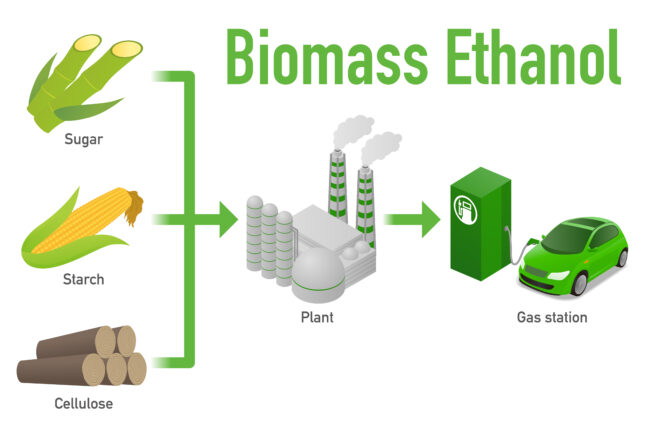
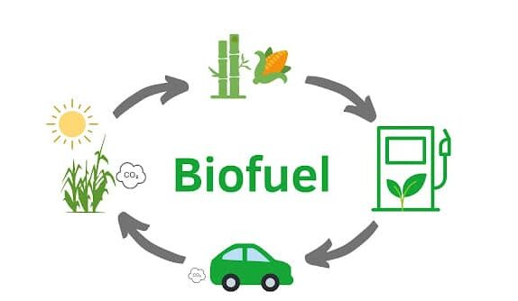
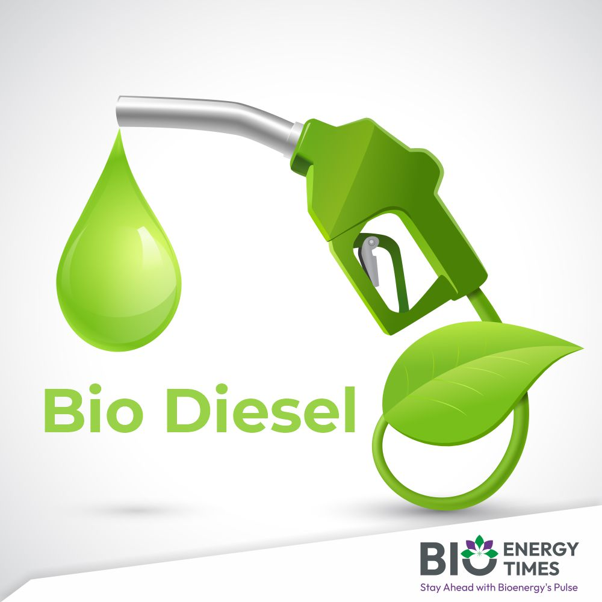

What is Biofuels?
Biofuel is a renewable energy source made from biomass — organic materials like plants,
agricultural waste, and algae. Unlike fossil fuels, biofuels are produced relatively quickly and can be
replenished.
The most common types of biofuels are:
- Ethanol - A type of alcohol made from fermenting crops like corn or sugarcane. It's often blended with gasoline to reduce emissions.
- Biodiesel - Made from vegetable oils, animal fats, or recycled cooking grease. It can be used in diesel engines.
- Biogas - Produced through the breakdown of organic matter (like food waste or manure) in the absence of oxygen, commonly used for generating electricity or heating.

Biofuel
Biofuel
How Biofuels Work
Biofuels are derived from organic materials such as plant and animal waste. They can be used to replace gasoline, diesel, and other fossil fuels in vehicles and power plants.
Biofuels are a key component of reducing greenhouse gas emissions and dependence on fossil fuels.


Advantages
Reduced Greenhouse Gas Emissions : Biofuels generally produce fewer GHGS than fossil fuels when burned. For example,
ethanol can reduce carbon emissions by up to 50% compared to gasoline.
Renewable and Sustainable : Biofuels come from plant-based sources that
can be
replenished annually, unlike fossil fuels that take millions of years to form.
Waste Reduction : Wind energy is suitable for multiple environments, such
as in
agricultural or working landscapes. They can be installed in distant and rural areas
too.Using
agricultural waste or food waste to produce biogas reduces the amount of organic waste in
landfills.
Energy Security : Reduces dependence on imported oil, promoting local
energy
production.
Disadvantages
Deforestation and Land Use Change : Growing biofuel crops can lead to
deforestation and habitat destruction, especially when forests or grasslands are cleared for
crop production. This can offset the carbon savings of biofuels.
Competition with Food Production : Crops like corn and soy used for
biofuels
could compete with food production, leading to higher food prices and food scarcity in some
regions.
Water and Soil Degradation : Biofuel crops require significant water and
fertilizers, which can lead to water scarcity, soil erosion, and nutrient runoff, harming
local
ecosystems.
Carbon Debt : Some biofuels may create a "carbon debt" if they result in
the
conversion of carbon-rich ecosystems like rainforests or wetlands into cropland.